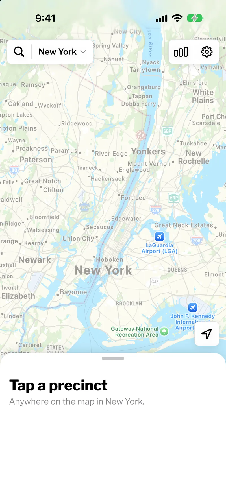
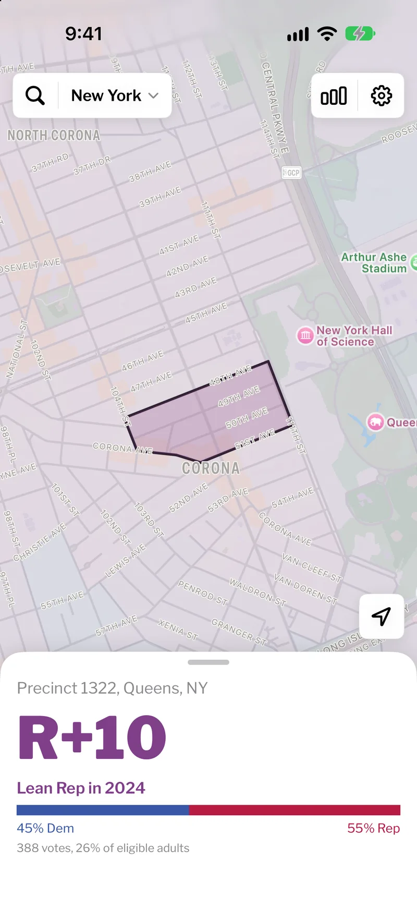
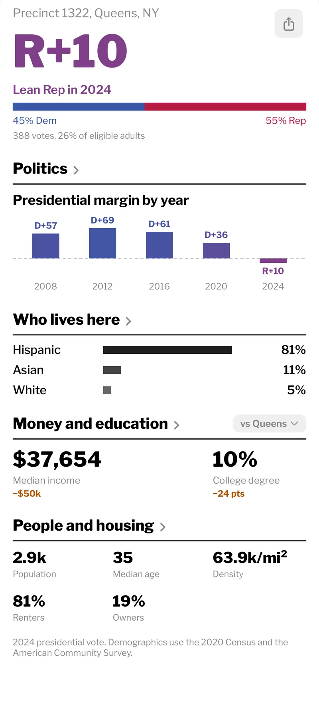
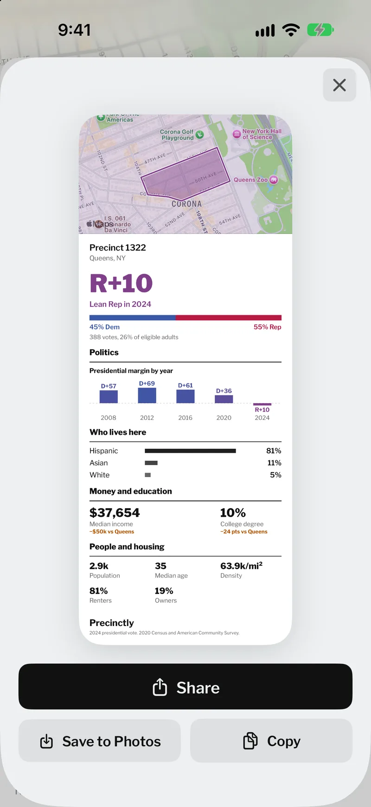
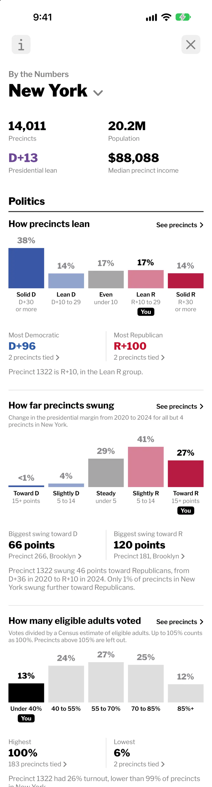
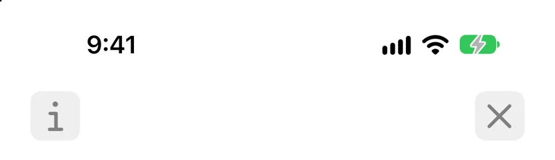
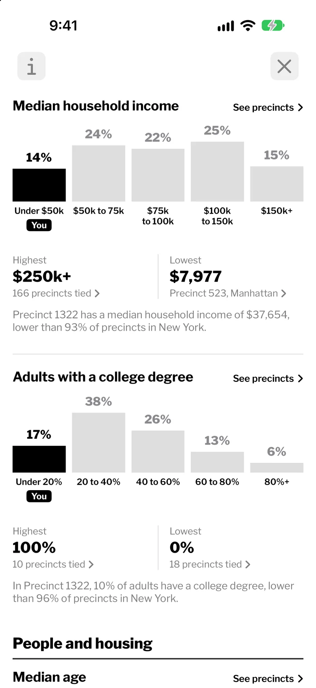
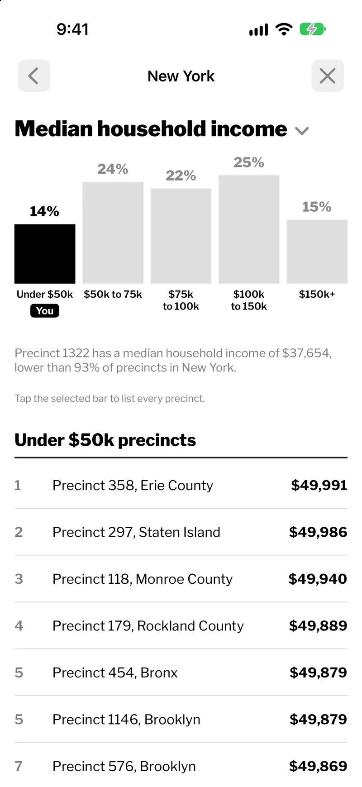
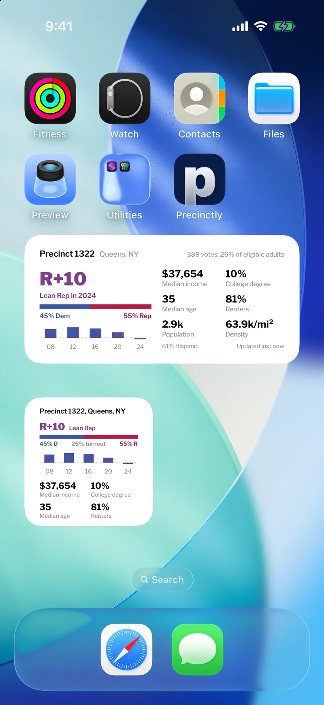
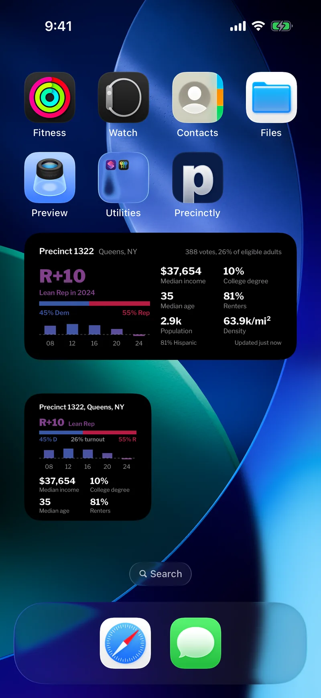

See how a neighborhood voted, and who lives there.
A precinct is the smallest area that reports its own election results, often just a few city blocks.
Download on the App StoreHow it works
Any precinct on the map
The big number is the margin in the last presidential race. Drag along the scale to see others.
R+10Lean RepPolitics
Each bar is one presidential race, above the line for Democrats and below for Republicans.
Who lives here
Race and Hispanic origin overlap, so the shares can add up to more than 100%.
Money and education
The small figures compare the precinct with Queens. The app can compare with New York City or the whole state instead.
People and housing
Every number on the card opens a chart of how it ranks across New York.
Any card can be shared as an image.




By the Numbers
Compare every precinct
Each chart covers every precinct in New York, or in one county you choose.
Find your precinct
On each chart, the bar marked You is the group your precinct falls in.
The precincts behind each bar
Each bar opens a list of its precincts, like these under $50k, sorted highest or lowest first.




Widgets
Your precinct on the Home Screen
The widget shows the precinct you are in.
It changes as you move
Walk into a new precinct and the widget switches to it.


Where it works
54,718
precincts in six states and the DMV core.
Most results are from 2024. Oregon and DC show 2020.
| Area | Precincts |
|---|---|
| California | 23,910 |
| New York | 14,011 |
| Texas | 8,872 |
| Colorado | 3,163 |
| Massachusetts | 2,152 |
| DMV coreWashington, DC, Montgomery and Prince George's Counties in Maryland, and Northern Virginia | 1,310 |
| Oregon | 1,300 |
Privacy
Every precinct is stored in the app, so your phone works out which precinct you are in by itself. There is no account, no ads and no analytics. The map and address search come from Apple Maps, so Apple receives the map areas you view and the text you search.
Location is optional. Without it, you can still pick any precinct on the map or search for an address.
Get Precinctly for iPhone
The code is open on GitHub.